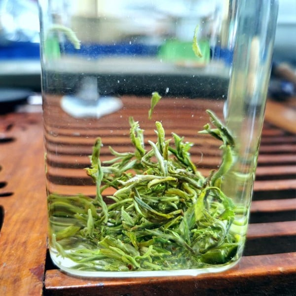

GIAO HÀNG
GIAO HÀNG TƯ VẤN
TƯ VẤNCÁC LOẠI DANH TRÀ
Danh trà là ý nói đến các loại trà đang nổi tiếng hiện nay , đứng góc độ tiến hóa của trà Trung Hoa, người ta phận chia các hình thức trà kinh điển như dưới đây:
- Mạt trà (抹茶) hay trà bột: là loại bột trà xanh dùng trong nhi lễ trà đạo của Nhật bản, có màu xanh lục và mùi thơm tự nhiên của trà. Mạt trà thường cao giá hơn các thứ trà khác và có lẽ hiện nay ngoài Nhật Bản khó tìm nơi nào có xưởng sản xuất loại trà này. Loại trà này có từ đời nhà Tống và có liên quan đến thiền tông. Việc chế biến được chuẩn bị vài tuần trước mùa thu hoạch. Thu hoạch xong, lá được cuộn cho mặt trái lộ ra ngoài rồi đem phơi. Sau đó đem xay mịn thành thứ bột màu xanh lục sáng. Khi dùng mạt trà pha với nước rồi lọc qua rây thật mịn. Rồi dùng trà tiển (thanh quậy trà) bằng tre để quậy đều lên. Mạt trà để uống có hai nồng độ: loại loãng tiếng Nhật gọi là usucha (Bạc trà – 薄茶) có hàm lượng 2-3 muổng nhỏ bột mạt trà pha với ¾ tách nước nóng và loại đậm gọi là koicha (Nồng trà – 濃茶) dùng đến 6 muổng nhỏ bột mạt trà cho cùng lượng nước nóng.
- Đoàn trà (磚茶) hay trà bánh: là khối nguyên lá hay đã xay nhỏ nén lại. Lối chế biến này có vào thời nhà Minh, để dễ vận chuyển thương mại. Lá trà sau khi thu hoạch xay ra hay để nguyên rồi đem hấp chín, sau đó cho vào khuôn ép (có lò sản xuất ép khuôn mang dấu hiệu riêng của mình). Nếu lá trà xay thành bột, người ta hồ thêm bột gạo rồi mới ép. Cuối cùng đem sấy cho khô. Trà bánh là nguyên liệu cho nhiều loại thức uống như trà sữa của Mông Cổ và trà bơ của Tây tạng, …. Vào thời Thế Chiến Thứ hay trà bánh được dùng thay tiền để trao đổi thương mại tại vùng Tây Bá Lợi Á.
- Yêm trà (淹茶) còn gọi là tiển trà (筅茶) hay trà ngâm: là loại trà ngày nay đang dùng. Loại trà này ra đời do Minh Thái Tổ Chu Nguyên Chương (trị vì 1368-1399) cấm làm trà bánh và trà bột nũa, và sự ra đời loại trà này làm phát triển ngành gốm sứ phục vụ việc uống trà. Đó là những lá trà phơi sấy khô, có thể ướp hương hay không, hãm với nước nóng mà dùng.
Loại hình trà ngâm có rất nhiều chủng loại và mỗi chủng loại có nhiều danh trà khác nhau. Hiện nay người ta lan truyền 10 loại đệ nhất danh trà Trung Hoa (dĩ nhiên không chính thức ) là: Tây Hồ Long Tỉnh (西湖龙井) của Hàng Châu, Đỗng Thính Bích Loa Xuân (洞庭碧螺春) của Giang Tây, An Khê Thiết Quan Âm (安溪铁观音) của Phúc Kiến, Hoàng Sơn Mao Phong (黄山毛峰) của An Huy, Quân Sơn Ngân Châm (君山银针) của An Huy, Kỳ Môn Hồng Trà (祁门红茶) của An Huy, Vũ Di Nham Trà (武夷岩茶) của Phúc Kiến, Lục An Qua Phiến (六安瓜片) của An Huy, Tín Dương Mao Tiêm (信阳毛尖) của Hà Nam, và Đô Vân Mao Tiêm (都匀毛尖) của Quỳ Châu.
Dưới đây giới thiệu rõ hơn một số dạng và danh trà.
- Trảm mã trà (斬馬茶): là loại trà mọc hoang lưu niên trên núi cao Vu Sơn tỉnh Tứ Xuyên, có tên cỏ trà Phương chi. Loại trà này có hương vị tuyệt vời, nhưng nó lại mọc nơi rất hiểm trở của núi Vu Sơn, mỗi năm nảy lộc một lần kéo dài một tháng có tiết trung thu rồi chết. Người sơn cước bản địa cũng gian nan mới hái được loại trà này. Sau người ta nghĩ ra cách tập ngựa ăn trà rồi thả lên núi. Ngựa quen đường cũ khi quay về thì mỗ bụng lấy trà. Ngoài tính chất vốn ngon tuyệt của lá trà, các chất dịch trong bụng ngựa càng làm tăng thêm phẩm chất Trảm Mã Trà. Trảm Mã Trà là món thức uống Từ Hi Thái Hậu thiết đãi các sứ thần Phương Tây trong yến tiệc mừng Tết Nguyên Đán 1874, còn có tên là Phương Chi thảo.
- Bạch mao hầu trà (白毛猴茶): Bạch mao hầu là tên dùng chỉ một loài vượn lông trắng sống ở vùng núi Vũ Di Sơn, Phúc Kiến. Loài này chuyên hái lá trà non trên núi để ăn nên tuổi thọ của chúng rất cao. Biết được điều này, dân trong vùng nuôi loài khỉ này để sai khiến chúng lên núi ăn trà. Vượn ăn trà không nuốt vào bụng ngay, mà dồn vào hai túi bên má. Khi về đến nhà chủ mới moi hai túi ấy ra lấy trà. Trà thấm chất dịch tiết trong túi đó nên rất thơm ngon và bổ dưỡng; trà này lại quý vì không thể sản xuất được nhiều. Người ta tin là uống loại trà này giúp tăng tuổi thọ vì nhiều con bạch mao hầu phục vụ hai ba đời chủ mà vẫn còn khỏe mạnh nhờ ăn lá trà này.
- Trùng diệp trà (蟲葉茶): trà ở núi Ly Sơn, tỉnh Thiểm Tây có một loài sâu, loài sâu này sau khi ăn lá trà thải ra phân. Người ta thu phân này về sao chế thành trùng diệp trà.
- Thanh nữ trà (青女茶) hay trinh nữ trà (貞女茶): là loại trà lộ bỉ xuân được thu hái bằng cách phái các cô gái đồng trinh leo lên đồi cao hái trà. Những trinh nữ này không mang theo túi hay gùi để đựng trà, mà khi hái xong cất trà trong lớp áo rộng thùng thình. Khi mặt trời lên, mồ hôi những cô gái này thấm vào trà nên gọi là trinh nữ trà. Huyền thoại kể rằng một vị vua đời Đường rất ham mê uống trà và rất sành điệu mùi vị trà. Một hôm, vua được uống một chén trà có vị thơm ngon lạ. Vua cho vời quan ngự thiện đến hỏi, vị quan này nhất định cho rằng không có thứ trà mới nào tiến vua cả. Vua cho tra hỏi mới biết hôm đó trời lạnh, người cung nữ lo việc pha trà độn gói trà vào trong người cho ấm. Mùi hương từ người trinh nữ tỏa ra thấm vào trà tạo nên một hương vị riêng biệt chỉ những người sành trà như nhà vua mới thưởng giám nổi. Từ đó vua cho tuyển thêm trinh nữ lo việc hái trà và ủ trà như đã nói, dĩ nhiên việc tuyển chọn mùi hương tự nhiên rất khắt khe.
Không chỉ có huyền thoại để thu hút người khác, người Trung Hoa có biệt tài biến hóa sản phẩm của mình để thu hút khách hàng. Rất nhiều loại trà được ra đời với cách chế biến cầu kỳ; trong số đó có một số danh trà cũng được huyền thoại hóa thêm màu sắc thần bí. Ví dụ:
- Ô Long Trà (烏龍茶): là loại trà gốc Phúc Kiến có màu nằm giữa trà xanh và trà đen (nghĩa là bị oxy hóa khoảng 10-70% tùy chất lượng) rất được người Trung Hoa ưa chuộng và dùng đơn giản đem hãm với nước nóng rồi dùng. Truyền thuyết kể do một người trồng trà thấy có con rồng đen từ giống cây trà này bay lên, nên từ đó đặt thành tên. Lá trà này khi hái về đem phơi cho héo, nhào trong rỗ tre để tăng bề mặt oxy hóa, phơi đảo cho thật khô, sấy và gia hương liệu.
Do được chuộng nhiều ở Châu Á nên nhiều loại trà ô long có mặt trên thị trường. Người ta sơ bộ thấy có một số trà ô long mang tên như sau: Đại Hồng Bào Trà (大红袍茶) một loại trà xưa kia dùng tiến vua, Thủy Kim Quy Trà (水金亀茶), Thiết La Hán Trà (鉄羅漢茶), Nhục Quế Trà (肉桂茶) … Trà Thiết quan Âm nói bên dưới cũng là một loại trà ô long.
- Trà Thiết Quan Âm (鉄觀音茶): Thiết quan âm là tên một danh trà thuộc nhóm trà ô long của trấn Tây Bình, huyện An Khê, tỉnh Phúc Kiến. Tương truyền vào đời vua Càn Long nhà Thanh, vùng đất này có một người chuyên trồng và chế biến trà tện là Ngụy Âm. Ngụy Âm là người rất sùng kính Quán Thế Âm Bồ Tát, sáng nào ông cũng dâng lên Phật bà ba chén trà liên tục suốt 10 năm trời. Một đêm ông nằm mơ thấy Quan thế Âm dẫn lên một khe núi chỉ cho một cây trà. Sáng hôm sau, thức dậy ông theo sự ứng mộng lên núi tìm được cây trà giống hệt trong mộng. Ngụy Âm bứng cả cây về trồng trongvườn nhà, vài năm sau cây tươi tốt ông thu hái chế ra một thứ loại trà ngon tuyệt vời, khi đóng bánh cứng nặng và có màu đen như sắt, sợi trà cong xoắn, cho nước hãm màu màu xanh lục, hương vị thơm ngon hơn hẳn các thứ trà khác ở địa phương. Ông đặt tên là trà Thiết Quan Âm và từ đó trở thành một danh trà khét tiếng trên thế giới.
- Bạch trà (白茶) hay trà trắng: là loại trà trong quá trình chế biến không để cho oxy-hóa. Chồi non trà được hái, rồi phơi nắng, rồi sau đó phơi trong râm; quá trình chế biến này khác với trà xanh ở chỗ không phơi héo, sao và lăn.Vì vậy bạch trà còn giữ nguyên tính chất của lá trà tươi. Tỉnh Phúc Kiến là địa danh nổi tiếng sản xuất trà trắng. Loại trà này cũng được sản xuất ở Sri-Lanke, Ấn Độ và Thái Lan.
Bạch trà (trà trắng) nổi tiếng có Bạch Hào Ngân Châm Trà (白毫银针茶), Bạch Mẫu Đơn Trà (白牡丹茶), Trân Mi Trà (寿眉茶), …
Bạch Hào Ngân Châm Trà là loại trà trắng vùng Phúc Kiến, chỉ hái đọt vào khoảng giữa tháng ba đến giữa tháng tư khi nụ hoa trà chưa kịp nở, và tránh hái vào ngày mưa, có sương giá. Trà này chỉ nên pha với nước nóng 750C trên 5 phút, cho ra nước trà hơi gợn sêt nhè nhẹ màu vàng lục nhạt, lóng lánh những lông trắng trên lá trà.
Bạch Mẫu Đơn Trà có giá trị thấp hơn Bạch Hào Ngân Châm Trà dù cũng là loại đọt trà trắng Phúc Kiến và thu hái chế biến chẳng khác gì Bạch Hào Ngân Châm Trà. Nhưng đắt nhất trên thế giới lại là bạch trà của Sri-Lanka, trồng ở vùng Nuwara Eliya có độ cao 2.000-2.500 m, gần ngọn Adam. Trà móc câu của Việt Nam cũng thuộc loại này, trà bạch mao ở Bảo Lộc cũng vậy.
- Hoàng trà (黃茶) hay trà vàng: là loại trà xanh cho hậu lên men enzyme. Sau khi sao và chà, lá trà gói trong một miếng vải ẩm và cho vào lọ trong vòng một ngày đêm với độ ẩm 80 đến 90 % để oxy hóa. Sau đó đem ra sấy nhẹ.
Hoàng trà nổi tiếng có: Quân Sơn Ngân Châm Trà (君山銀針茶) ở tỉnh Hồ Nam, Mông Đính Hoàng Nha Trà (蒙頂黃芽茶) của Tứ Xuyên, Đại Diệp Thanh Trà (大葉清茶) của Quảng Đông, Hoa Sơn Hoàng Nha Trà (华山黃芽茶) của tỉnh An Huy, …
- Lục trà (緑茶) hay trà xanh: là loại trà thuần dùng lá trà không phụ gia gì khác và không cho lên men hay hạn chế sự lên men tối đa, chỉ phơi khô rồi cất giữ. Loại trà này được dùng rất phổ biến hiện nay vì ngoài hương vị trà mộc còn giữ nguyên, các nghiên cứu khoa học cho thấy nó rất có lợi cho sức khỏe. Nó có mặt trong cửa hàng của Trung Hoa, Nhật, Ấn Độ, Thái Lan, Việt Nam và nhiều nước khác. Các loại trà xanh danh tiếng có thể kể ra: Long Tỉnh Trà (龍井茶) ở Hàng Châu, Long Đỉnh Trà (龍頂茶) của Chiết Giang, Bỉ Lộ Xuân Trà (碧螺春茶) của Hàng Châu xưa là một loại trà tiến vua liên quan đến Trinh Nữ Trà, Tín Dương Mao Tiêm Trà (信阳毛尖茶) của Hà Nam, Hoàng sơn Mao Phong (黄山毛峰) của tỉnh An Huy, … Những thứ trà xanh danh tiếng của Nhật có thể kể đến là: Nihoncha (Nhật Bản Trà -日本茶) ,), Ryokucha (Lục Trà – 緑茶,), Gyokuro (Ngọc Sương Trà – 玉露峰), … Trà sen, trà lài của Việt Nam cũng là loại trà xanh.

Ở Việt Nam, trà xanh hay chè xanh còn dùng chỉ nước vối. Trà xanh thôn dã này chọn lá trà bánh tẻ (không quá non hay quá già) cho vào nồi đồng đun đến khi có sắc màu vàng xanh đem ra dùng. Cũng có khi người ta chế thành cao: nước trà xanh đun đến khi cạn vơi một nửa, tiếp thêm nước, thêm ít đường tán, gừng giã nhỏ và đun tiếp khoảng một ngày đêm cho đến khi dặc sệt lại. Dùng mo chuối hay mo cao làm chổi quét lên giấy bản phơi nắng cho thật khô, rồi phơi sương lại cho dịu. Khi dùng cắt một miếng thả vào nước nóng là có bát chè xanh.
- Trà sen và trà lài: Người Việt có loại trà độc đáo là trà sen. Trà sen là một loại trà xanh ướp với hoa sen để lấy hương thơm tự nhiên của loài hoa này. Phương pháp chế biến đa dạng và rất độc đáo, sau đây là một trong vài cách:
1.- nhét cánh trà vào giữa hoa sen một đêm, hôm sau lấy ra dùng hay sấy nhẹ để dành.
2.- Bứt lấy nhị sen rồi ướp với trà một đêm hay cho nhị sen và trà vào bếp hong cho hương sen quyện vào trà. Giới sành điệu thời trước còn đòi hỏi trà sen ướp từ hoa sen của đầm Đồng Trị, làng Quảng Bá, Hồ Tây vì sen ở đây thơm hơn những nơi khác.
Món trà thứ hai làm người Việt nổi tiếng là trà lài, sau này người Trung Hoa có làm theo ra một số sản phẩm trà mang hương vị loài hoa này gọi là Hương Phiến Trà. Trà xanh trải một lớp rồi hoa lài trải một lớp, cứ như thế mà làm cho đầy. Bên trên phủ một lớp giấy bản trong vài ngày, rồi lấy ra đem sao nhẹ.
- Hắc trà (黑茶) hay trà đen: là loại trà ủ cho oxy-hóa hoàn toàn. Hắc trà có vị đậm và nhiều caféine hơn các loại trà khác, và ở Trung Hoa người ta gọi là hồng trà (紅茶) vì có nước pha ra màu đỏ sậm và theo kiểu khoa trương cầu may của người Trung Hoa. Ở Trung Hoa từ trà đen dùng chỉ các loại trà lên men lại (hậu lên men) như trà Phổ Nhĩ (Pu-erh), còn ở phương tây “hồng trà” chỉ một loại nước sắc của Nam Phi tên là rooibos. Do vậy khi dùng thuật ngữ hắc trà hay hồng trà nên hết sức thận trọng. Trà đen được chế biến như sau: sau khi thu hái lá trà để ngoài trời cho héo, rồi cho lá trà bị oxy-hóa theo sự điều chỉnh nhiệt độ và độ ẩm. Sau cùng đem sấy khô
Các loại trà đen danh tiếng là: Tạng Trà (藏茶) có nghĩa là trà Tây Tạng: một loại trà bánh sản xuất ở Tứ Xuyên, Anh Đức Hồng Trà (英徳紅茶) của Quảng Đông, Kỳ Môn Hồng Trà (祁門紅茶) của An Huy, Cửu Khúc Hồng Mai Trà (九曲红梅茶) của Hàng Châu, …
Trà đen Ấn độ có trà Assam, trà Munnar, trà Kangra, … Sri lanka có trà Ceylon và Việt Nam cũng có một loại trà đen xuất khẩu.
Kỳ Môn Hồng Trà (祁門紅茶) là loại trà đen nổi tiếng của địa danh Kỳ Môn thuộc tỉnh An-Huy, xuất hiện đầu tiên vào năm 1875. Hiện nay người ta phân biệt có mấy loại Kỳ Môn Hồng Trà là: Kỳ Môn Mao Phương Trà (祁門毛峰茶), Kỳ Môn Tân Nha Trà (祁門新芽茶); Kỳ Môn Công Phu Trà (祁門功夫茶) và Kỳ Môn Hào Nha Trà (祁門毫芽茶). Loại trà cũng mang tên Kỳ Môn nhưng không xuất xứ từ vùng Kỳ môn là Hồ Bắc Kỳ Môn Trà (湖北祁門茶).
Hồng trà sủi bọt là một sản phẩm trà đen của Đài Loan xuất hiện hồi thập niên 80 thế kỷ 20. Loại trà này có cho thêm sữa hay một chất phụ gia mang tính nhũ tương, khi lắc lên bọt lâu tan nên thành tên.
- Trà Phổ nhĩ (普洱茶 – Pu-erh Cha): là loại trà đen danh tiếng có lịch sử rất xa xưa cũng được gọi chính danh trà đen tại Trung Hoa, xuất xứ từ vùng Phổ Nhĩ, Vân Nam, nên đặt thành tên. Nhưng loại trà này cũng được sản xuất ở những nước sát Vân Nam như Lào, Việt Nam, Myanma. Nó ra đời cùng với con đường buôn trà “Trà Mã Cổ Đạo”. Trà Phổ Nhĩ là loại trà sản xuất bằng cách lên men trà xanh đã khô, vị giống như đất, có thời gian bảo quản rất dài (trung bình 1-5 năm, có khi đến 50 năm) và thường được coi là thuốc hơn là thức uống, vì được cho là làm giảm cholesteron, acid béo no và giúp giảm cân.
Trà phổ nhĩ được chia làm hai loại: loại tươi gọi là mao trà (hay còn gọi là sinh trà hay thanh trà); loại chín gọi là thục trà là mao trà qua chế biến lần nữa bằng cách cho lên men. Theo hình dáng Trà phổ nhĩ được chia làm các loại sau: bính trà (餅茶), đà trà (沱茶), thuẫn trà (磚茶), phương trà (方茶), khẩn trà (緊茶), kim qua trà (金瓜茶).

- Lại nữa, người Việt nói đến trà Tàu có nghĩa nói trà ướp hương vì thời trước loại trà nhập từ Trung Hoa thường là loại trà này. Sau này tuy gọi là trà Tàu nhưng đa phần là trà sản xuất tại Việt Nam nhưng theo phương cách ướp hương. Trà tàu hay trà ướp hương có thể ướp bằng hương liệu hay bằng hoa tươi. Hai loại trà sen và trà lài nổi tiếng của Việt Nam là hai loại trà ướp hương, dân đen có trà ngâu, trà sói hay quý phái hơn là trà ướp thủy tiên, trà ướp hoa quỳnh. Ngoài ra còn thấy Trung Hoa có Quế Hoa Trà (桂花茶) ướp hoa quế, Mai Khôi Trà (玫瑰茶) ướp hoa hồng, Cúc Hoa Trà (菊花茶) ướp hoa cúc và thậm chí ướp với gạo như một thứ trà Nhật có tên Genmaicha. Cũng có thứ trà tẩm tinh dầu chanh, tẩm rượu rum như trà Jagertee, rồi có loại trà dùng lá thông xông khói, …
- Trân châu trà (珍珠茶): là loại trà chế biến từ lá chè trộn với các hạt trân châu làm từ bột sắn. Trà trân châu cò loại mang mùi trái cây, có loại pha vối sữa. Đặc điểm pha chế của loại trà này là “lắc trước khi dùng”, nước trà lúc đó nổi bọt và dưới đáy còn các hạt bột sắn trắng, nên người Anh gọi trà này là “bubble tea” còn người Pháp dịch sát là “thé aux perles” hay dịch theo người Anh “thé aux bulles”. Mỗi ly trà có một cái ống hút, khi hút phải những hạt “trân châu” bột sắn người uống trà vừa thưởng thức hương vị trà vừa nhai nhai hạt trân châu dẽo dẽo.
- Trà mạn hảo: là một loại trà xanh ướp nổi tiếng Bắc Bộ thời thuộc Pháp và hay được Nguyễn Tuân nhắc đến trong tác phẩm của mình. Trà mạn hảo nổi tiếng đến mức hóa thân vào câu ca dao sau:
Làm trai biết đánh tổ tôm,
Uống trà mạn hảo, xem nôm Thúy Kiều.
Trà mạn là tiếng gọi chung các loại trà xanh (lục trà) ở miền ngược (nên còn gọi là trà mạn ngược; đặc biệt vùng Hà Giang) và Mạn Hảo cũng là một địa danh vùng Vân Nam. Ngày xưa người ta lên miền ngược Hà Giang hay lên tận Mạn Hảo mua trà về đều gọi chung là trà mạn hay trà mạn hảo. Vì thế việc buôn trà thời xưa rất vất vã, phải lên miền ngược mua mang về, ca dao có câu:
Chồng tôi thường ngược sông Ngâu,
Mua chè Mạn Hảo tháng sau thì về
Nhà buôn đi ngược lên miền núi mua trà hoang hái từ vùng này về ướp các loài hoa như nhài, sói, sen, thủy tiên, … Loại trà mạn hảo Nguyễn Tuân nói là loại trà ướp hoa sói, và chỉ miền Bắc mới có thói quen ướp trà bằng hoa sói, trong Nam chuộng hoa lài hơn. Chứng tỏ cây trà có gốc bản địa miền thượng du Bắc Bộ Việt Nam.
- Tước thiệt trà: là loại trà búp khi khô quăn lại và nhỏ như lưỡi chim sẽ. Ngày xưa đây là một danh trà của Việt Nam, nay không còn thấy.
Vũ Thế Ngọc trong cuốn Trà Kinh (Việt Nam) có dẫn: Triều Lê, Nguyễn Trãi (1380 – 1442) viết sách: “An Nam Vũ Cống” (Dư địa chí) ghi nhận tại châu Sa – Bôi (Quảng Trị) sản xuất loại trà lưỡi sẻ (Tước thiệt) rất thơm ngon.
Dương Văn An (1514 – 1591) triều Mạc Quang Bảo nhuận sắc tác phẩm “Ô Châu Cận Lục” cũng viết: trà ở huyện Kim trà (nay là Hương Trà – Thừa Thiên Huế) tên gọi lưỡi sẻ (tước thiệt) trồng tại vùng đồi núi An Cựu giải khát, trừ phiền, chữa thũng, đứng đầu trăm loại thảo, dược tính linh diệu.
- Bên cạnh trà Tước thiệt, trong thi ca Nguyễn Trải có nói đến một thứ trà khác cũng đã thất truyền: Trà Hồng mai.
Chẳng biết trà Hồng mai ra sao và có phải là tên gọi khác của trà Tước thiệt hay không, nhưng chắc chắn loại trà này có thật vì vài trăm năm sau Nguyễn Du cũng nhắc lại trong truyện Kiều (đoạn Kiểu và Hoạn thư):
Thiền trà cạn chén hồng mai,
Thong dong nối gót thư trai cùng về.
(câu 1991-1992)
Phải chăng đây là Cửu Khúc Hồng Mai Trà (九曲红梅茶) của Hàng Châu hay một loại trà riêng của Việt Nam có tính chất tương tự thế.
- Thời trước, cách nay khá lâu, có làng Vân Trai, giáp Bạng Thượng (Thanh Hóa) chuyên làm loại trà có tên là trà Bạng (lấy theo tên địa danh). Trà Bạng chế biến bằng cách hái lá trà về đập dập nát rồi phơi khô trong râm. Một thời trà Bạng nổi tiếng khắp nước nhưng nay không còn nữa.
Chẳng những dùng lá mà người Việt còn dùng nụ trà gọi là trà nụ; sang thì uống trà lá Mạn Hảo pha ra có màu xanh biếc tục gọi là trà “mật vịt” (vì màu xanh ví như mật con vịt); nghèo mà quen thói phong lưu thì có trà bồm toàn lá già phơi khô.
- Ngày trước, vùng Sài-Gòn – Chợ Lớn còn có một thương hiệu trà “Nghi bồi nham” (tức trà tổ kiến). Tên hiệu như vậy nhưng chắc chắn không phải vì cây trà làm ra sản phẩm này được trồng trên tổ kiến. Thực ra đó là một thứ trà bánh bẽ ra cho vào ấm trà rồi châm nước sôi vào. Tuy biết là vậy nhưng tên gọi của nó cũng gây tò mò thú vị cho khách uống trà và lâu dần trở thành một thương hiệu nổi tiếng một thời. Ngày nay không còn thấy loại trà này nữa.
Còn đọc tài liệu chúng ta thỉnh thoảng nghe nói trà mộc, chẳng qua đó là loại trà nguyên chất không pha chế ướp hương gì cả hay còn gọi là trà xanh đã giới thiệu ở trên. Ở Việt Nam cái thú của người sành trà thích dùng trà mộc; một là vì có người muốn tận hưởng cái khẩu vị nguyên sơ của trà, hai là vì có người muốn tự ta ướp hoa theo đúng ý thích. Chúng ta thấy một nét hồn nhiên mộc của người Việt trong văn hóa trà là ít khi dùng chữ nghĩa hoa hòe như người Trung Hoa để đặt tên trà, đơn giản gọi là trà mộc, trà sen, trà lài hay với địa danh như trà Thái Nguyên, trà Bảo Lộc, trà Tân Cương, trà Mạn Hà Giang, trà Vị Xuyên, trà Lục Yên Bái, trà Suối Giàng., … Tính hồn nhiên này là nét đặc sắc trong Trà phong Việt Nam.

Viết bình luận